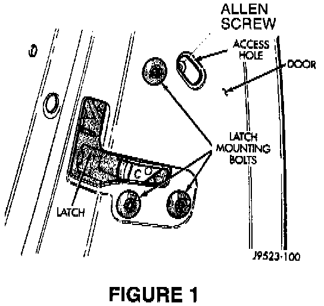

Doors/Locks - Inoperative/Binding
NO: 23-03-98GROUP: Body
DATE: Jan. 30, 1998
SUBJECT:
Door Latch Adjustment
MODELS:
1997 - 1998 (ZJ) Grand Cherokee
1997 - 1998 (ZG) Grand Cherokee (international Markets)
1997 - 1998 (XJ) Cherokee
SYMPTOM/CONDITION:
Doors and/or locks may not function properly. Symptoms can include inoperative door locks, lock mechanism binds, etc.

DISCUSSION:
Most door latch related symptoms are caused by improper adjustment of the latch mechanism. Always adjust the latch mechanism prior to attempting any other repair.
Open the door and loosen the 5/32 in. allen screw through the access hole (See Figure 1).
Operate the outside handle several times to remove any tension from the linkage and tighten the allen screw to 3 Nm (30 in. lbs.). Check the operation of the door and locks. If the problems still persist, further diagnosis is required.
POLICY: Information Only